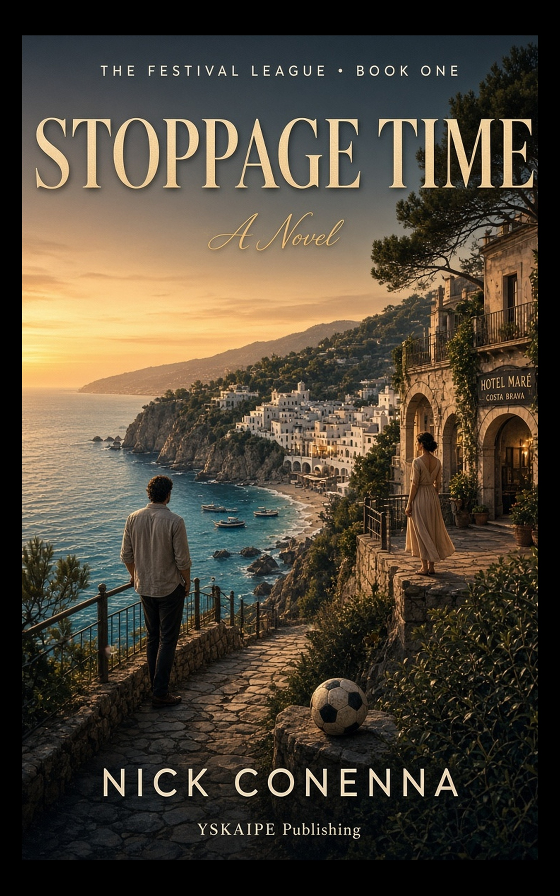
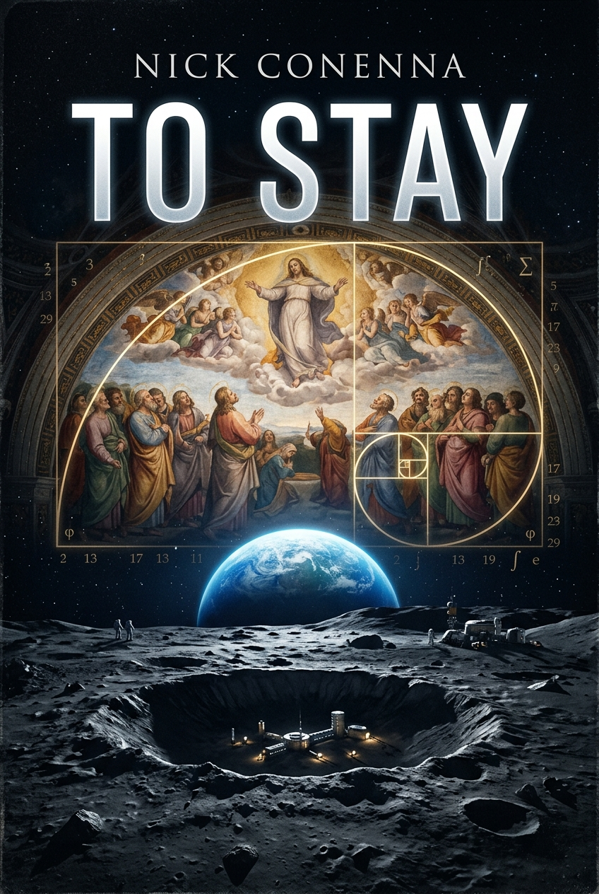
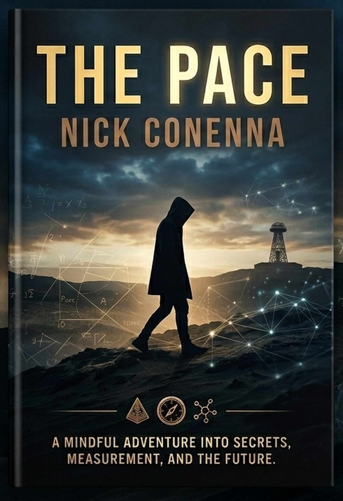

Fiction set in real places, with the travel guide inside.
YSKAIPE is an independent publisher of series you can visit. Every book is set somewhere you can actually go, and ends with a short companion guide to those places. The journey is the reward.
-
 The Tides of Battery Island Deb Conenna · Historical fiction Three novelettes · $5.99 on KDP
The Tides of Battery Island Deb Conenna · Historical fiction Three novelettes · $5.99 on KDP -

Stoppage Time Nick Conenna · The Festival League, Book One Sports romance · Costa Brava -

To Stay Nick Conenna · Alternate-history space fiction Standalone novel -

The Pace Nick Conenna · The Cubit and the Quark, Book I Thriller · Revised edition forthcoming
The Tidewater Novels, Book One
The Tides of Battery Island
by Deb Conenna
Hurricane Hazel put a cargo schooner on the oyster shoals behind Battery Island in October of 1954, and something went down with her that never made it into the harbor log. What a nineteen-year-old deckhand sealed inside a brass cylinder and threw into the marsh that night was found by morning, and hidden ever since.
Seventy years on, Charlotte Lynch comes home to Southport to bury her grandfather and settle a house full of nothing much, until a codicil in her briefcase names her family heir to the island itself, and a neighbor on the next porch over makes it clear the marsh has been waiting for someone to come asking.
Three novelettes, one price, two timelines.
- Genre
- Historical fiction, dual timeline
- Setting
- Southport, NC and Battery Island: 1954 and the present day
- Format
- Three novelettes in one Kindle edition (KDP)
- Status
- Forthcoming. The final research trip to Southport is underway.
A sports romance series in three countries
The Festival League
by Nick Conenna
One hot summer on the Costa Brava. A pitch, a rivalry, and the ninety minutes, plus stoppage time, in which everything can still change.
Each book in the series is played in a new place, in a new key: heavy stakes in Spain, a season of second chances in Portugal, and a lighter, funnier turn in the Swiss Alps. Read them in order, or start wherever you'd like to travel.
- Stoppage Time Costa Brava, Spain · Manuscript complete, KDP release coming
- Clean Sheet Porto and Lisbon, Portugal · In development
- The Through Ball Valais, Switzerland · In development
- More matchdays to come
A standalone novel
To Stay
by Nick Conenna
The Apollo astronauts went to the Moon to visit. What if, the next time, we had gone to stay?
A small change in the space program ripples through sixty years of alternate history, all the way out to Voyager 1's real crossing of the heliopause, the edge where the Sun's wind gives way to interstellar space. At the center of it is Dante Fiorenza, from a family of Tuscan fresco restorers: people whose whole trade is making things last.
- Genre
- Alternate-history space fiction
- Setting
- Siena and Florence, low Earth orbit, the Moon, and the far edge of the solar system
- Status
- Available now on KDP
A four-book thriller series
The Cubit and the Quark
by Nick Conenna
Money, measurement, and time are the oldest things people agree on, and the easiest to quietly rewrite. Every unit began as a piece of a human body: a forearm, a stride, an outstretched pair of arms.
The Pace opens the series with a story that runs from the Reed Gold Mine in North Carolina to the law now deciding what counts as digital money, with a prayer in Aramaic and the difference between two Greek words for time, chronos and kairos, running underneath.
- The PaceBook I · Revised edition forthcoming
- The FathomBook II · In the works
- The BreathBook III · In the works
- The StandardBook IV · In the works
Every book ends with a guide to the places in it.
Finish the story, then turn the page: a few pages of practical travel notes on the real towns, coasts, and landmarks you just read about. Where to stand, what to see, what the characters would have eaten.
That's the YSKAIPE promise. The story is the escape, and the guide is how you make it real.
Companion guide
Sample: the places in The Tides of Battery Island
- Southport waterfront · where Charlotte comes home
- Battery Island, Cape Fear River · the island itself
- The marsh behind the oyster shoals · where the cylinder landed
Hear first when the next book lands.
One short email per release: the new book, where it's set, and a launch-week price when there is one.